Lab 5: PID Control
Prelab
For debugging, the robot starts PID control upon receiving a BLE command with gains (kp, ki, kd), runs for 5 seconds while storing timestamped sensor and motor data in arrays, then sends all data back to Jupyter upon a second command.
Two BLE commands were implemented: one to start the PID run with specified gains, and one to stream the stored data back. On the Jupyter side, a notification handler parses the incoming comma-separated strings into time, ToF, and PWM arrays for plotting.
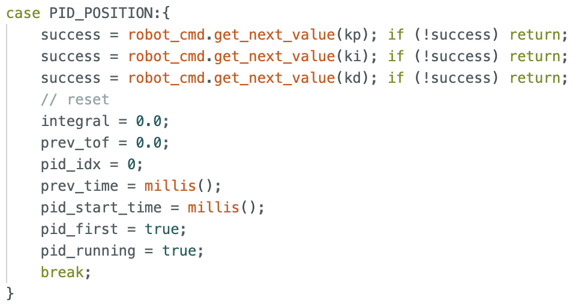
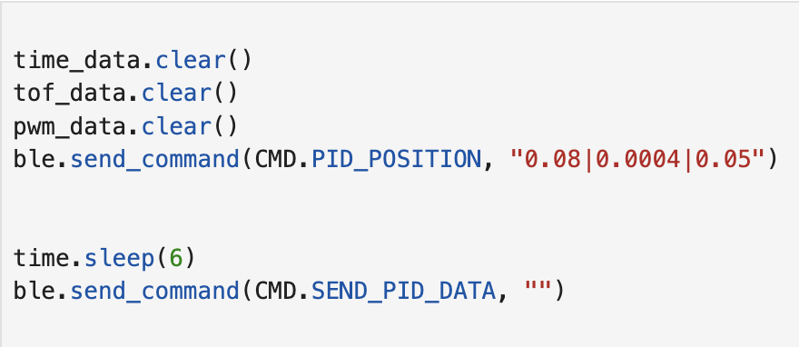
Task 1 Position Control
In the last experiment, I measured the lower limit of my car's PWM to be 35, which is used as the deadband lower limit. Since the car needs to move straight, the PWM value on the left side needs to be 1.4 times that on the right side. Therefore, in order to make both motors lower than the hardware maximum value of 255, I set the deadband upper limit to 180 (255/1.4=182).
Since the starting point is 2-4 meters, I selected the Long Mode of TOF, so the error range is 40-4000mm. If I want the robot to move at full speed at 2000mm, kp = 180/2000 = 0.09. I also chose 5 seconds as the TOF sampling time.
Task 2 PID Tuning
I applied the PID model. In the overall parameter tuning process, I first adjusted only P, then added I to correct the steady-state error, and finally added D to reduce overshoot, while allowing for higher kp values.
In Task 1, the calculated value of kp was 0.09, but in subsequent practical applications, overshoot was severe. Therefore, I chose to set Kp to 0.08 and Ki and Kd to 0. Because I wanted the car to start slowly, I initially set Kp to 0.02, starting from approximately 2 meters. The results are as follows.
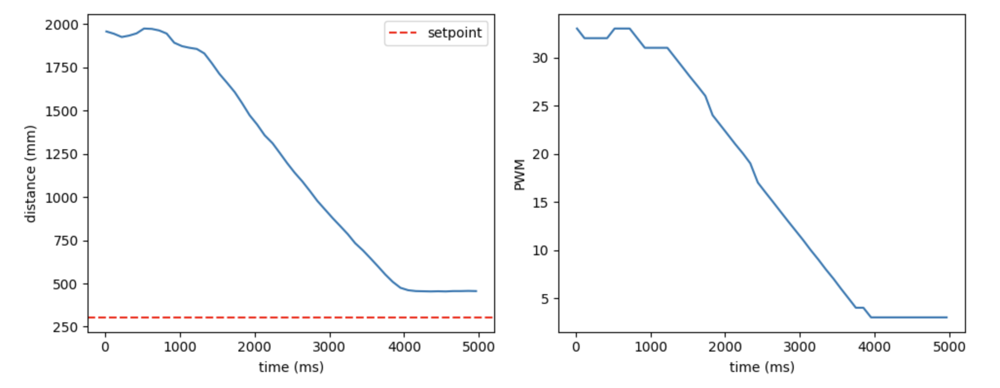
As shown in the image above, the car stopped before the set point, so Ki needs to be increased to continue pushing the car to the set point. After repeated experiments, I determined that Ki should be 0.0004, and the results are as follows.
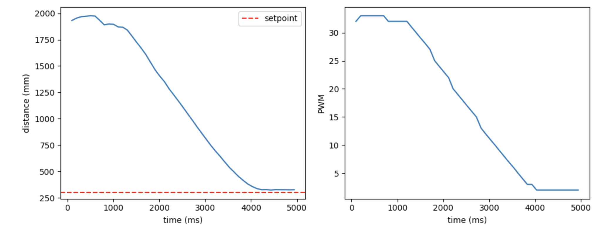
Finally, the complete PID model was applied to the car. To allow the car to reach its maximum speed at 2 meters, Kp was set to 0.08. Once the speed increased, Pd needed to be set to brake the car. After repeated experiments, I finally set Kd to 0.05. I conducted tests at lengths of 8, 9, and 10 tiles (corresponding to 2.5m, 2.8m, and 3m), and the results are as follows.
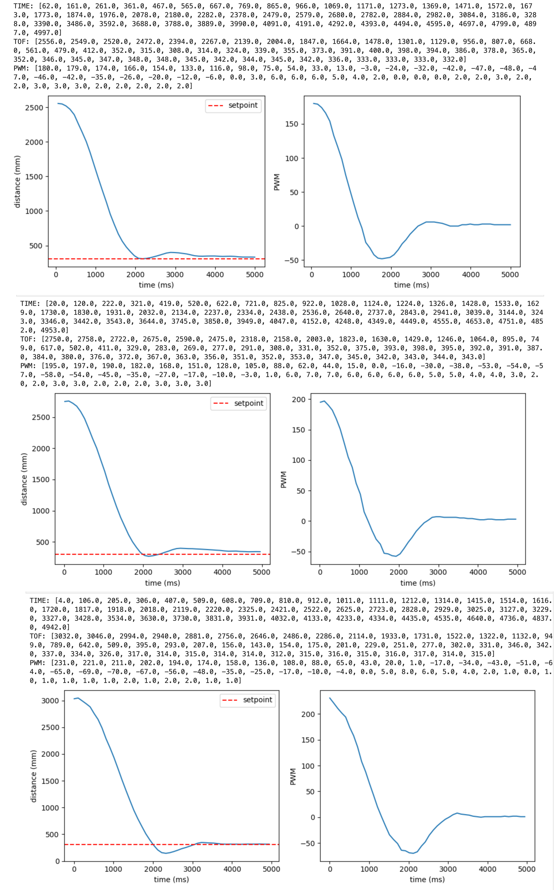
Task 3 Result
Final gains: kp=0.08, ki=0.0004, kd=0.05
Start from a distance of 8 floor tiles (2.5m).
Start from a distance of 9 floor tiles (2.8m).
Start from a distance of 10 floor tiles (3m).
When the car is kicked away from the set point, it returns to its original position, demonstrating the anti-interference capability of the PID model.
Task 4 Linear Extrapolation
In lab3, the time-of-flight (TOF) data transmission frequency was measured to be approximately 17.5 Hz. I calculated the PID loop frequency to be approximately 109 Hz, about six times that of TOF, significantly faster than TOF.
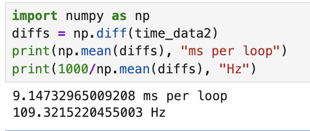
To decouple these two rates, a linear extrapolation method was used: when no new TOF data is available, the current distance is estimated using the slope between the two most recent TOF readings. Below is the code I used to implement linear extrapolation. To prevent the estimated value from going too far as the extrapolation time is too long, if there is no new ToF data after more than 100ms, the extrapolation will stop.
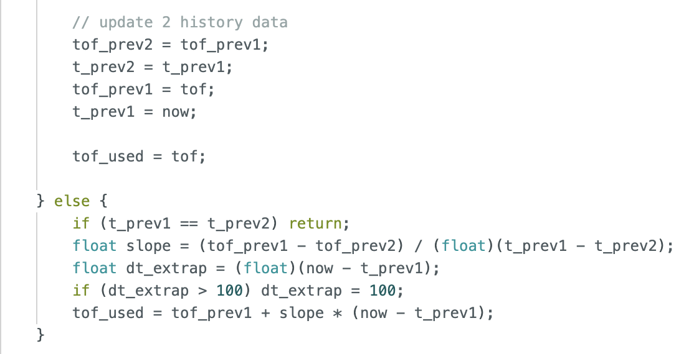
Below is the result graph after the run. As you can see, the extrapolated values (orange) smoothly fill the gaps between the original ToF step sizes (blue), allowing the PID controller to obtain distance estimates more frequently without waiting for new sensor data.
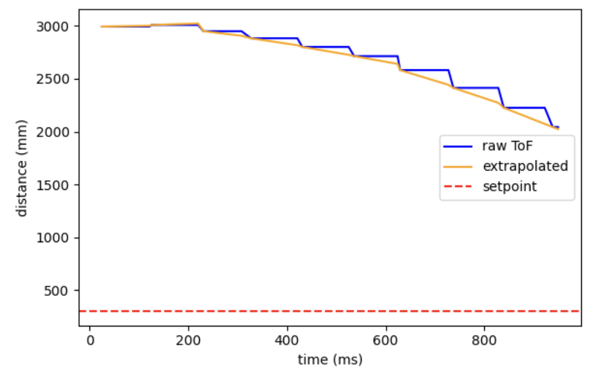
Task 5 Integrator Wind-up Protection (5000-level)
Without integral saturation protection, the integrator would over-accumulate integral values as the robot moves away from the setpoint, causing overshoot when reaching the target point. To prevent this, I limit the integral term to between -500 and 500. When the accumulated integral value exceeds this range, the integral value is truncated, thus preventing the PID output from becoming uncontrollably large.
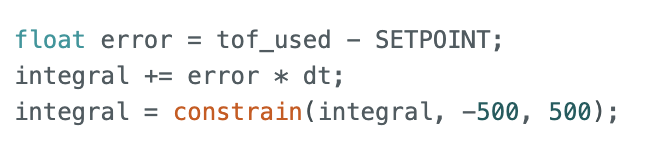
The image below shows a comparison with and without Wind-up protection, demonstrating that with protection added, the robot can get closer to the set point.
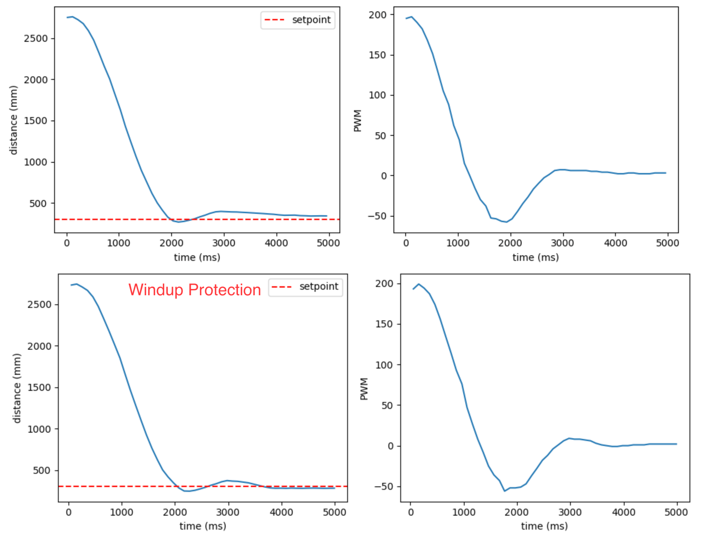
Task 6 Open Loop Control
I wrote open-loop control code to combine axial turning and linear motion of the car.
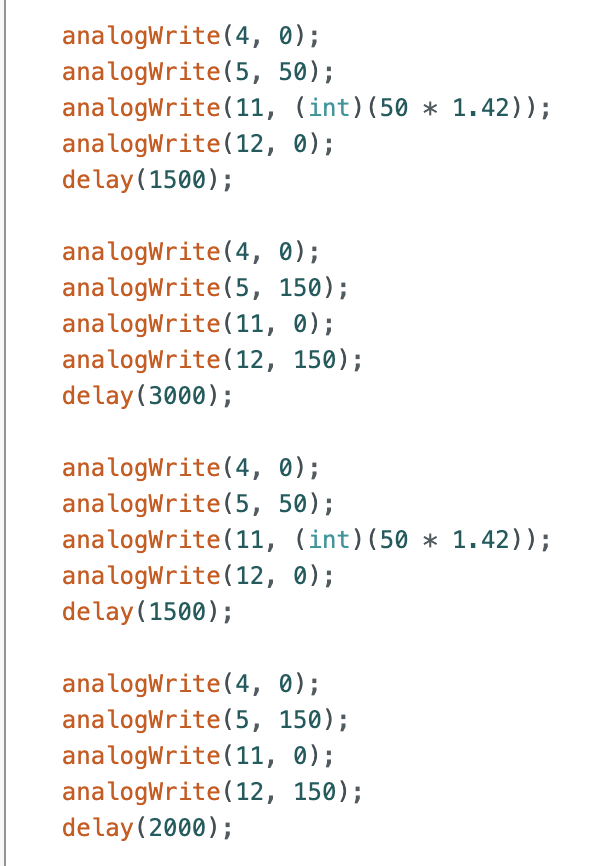
Task 7 AnalogWrite Frequency
Based on the oscilloscope readings above, Artemis's analogWrite output frequency is 183Hz, which I believe is sufficient for a motor, as the previously calculated TOF output frequency is 10Hz, indicating that the PWM update speed is fast enough to keep up with the data collected by the sensor. Manually configuring the timer to update the PWM, I think, has the advantage of making the motor current smoother and the operation more stable.
Task 8 More Discussion with Minimum PWM
To measure the PWM values for moving the car and turning along the axis without overcoming static friction, I first started the car moving and then lowered the PWM value. After repeated experiments, the lowest PWM value for moving the car forward without overcoming static friction was 30, and the lowest PWM value for turning along the axis was 110, which is consistent with the expected results.
Statement
I got much help from Katherine Hsu's page.